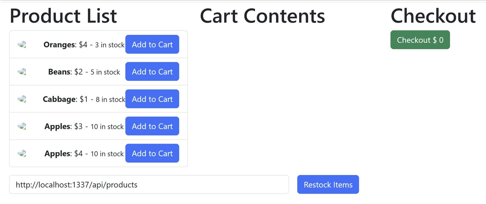
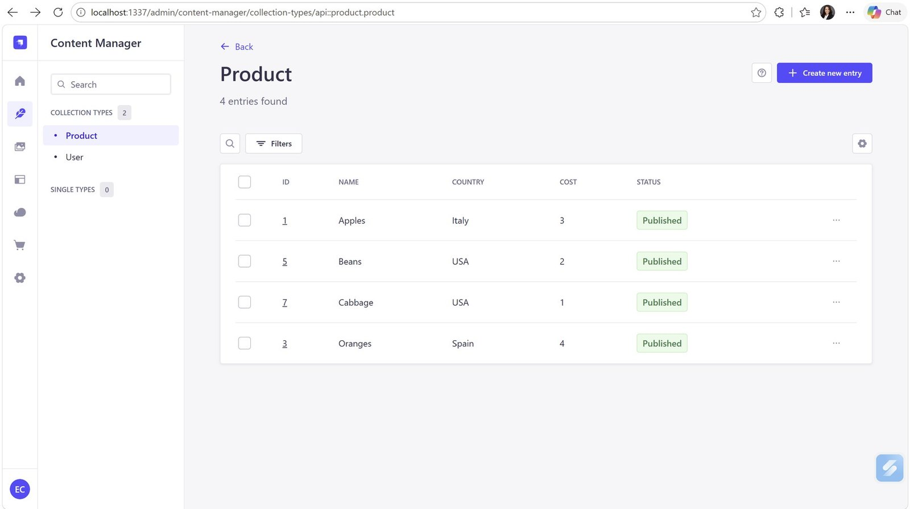
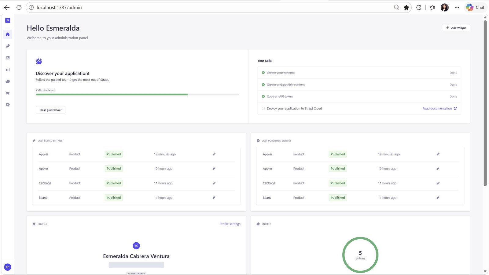
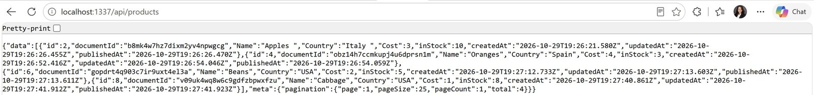
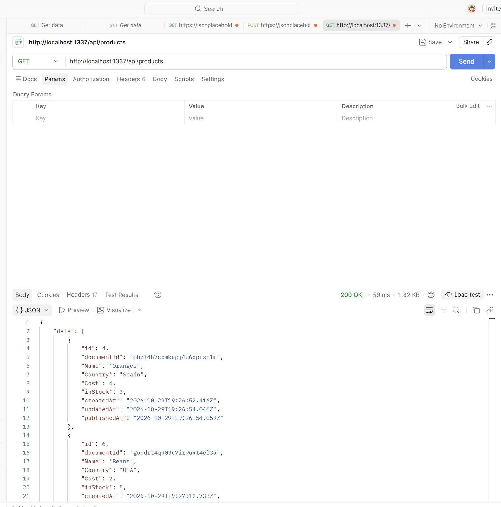
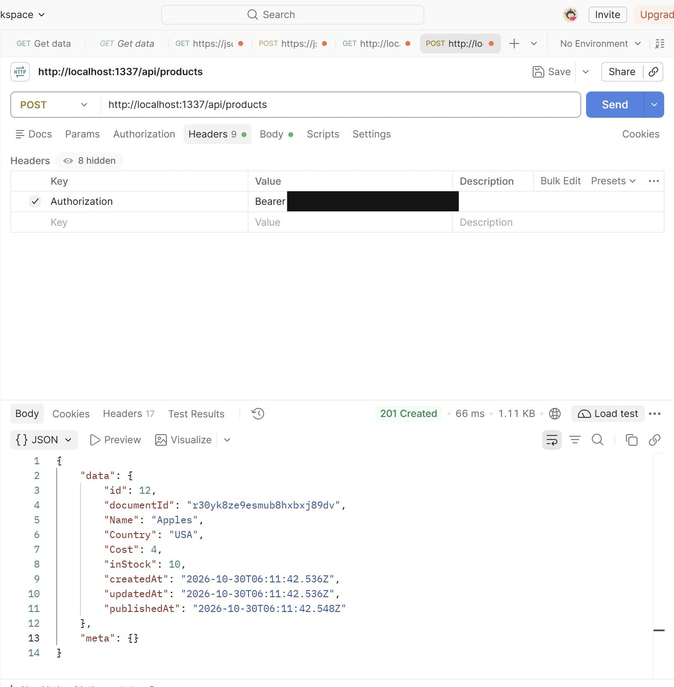
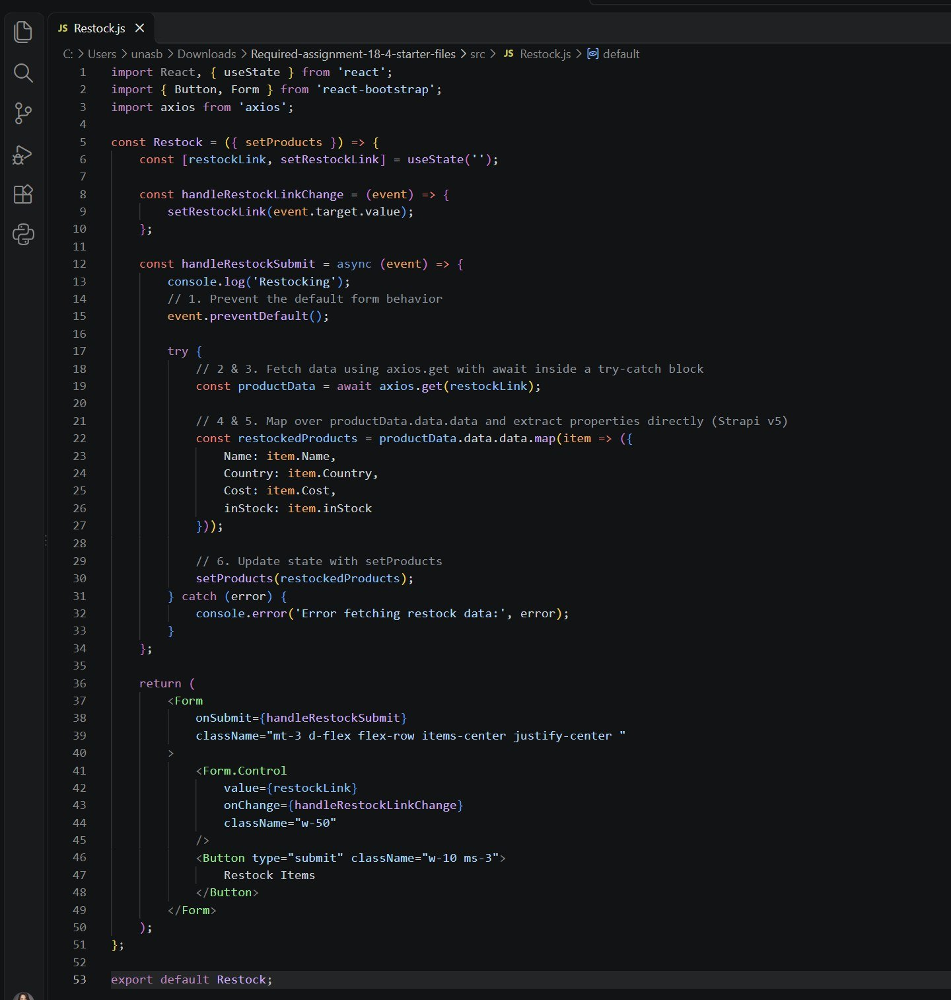
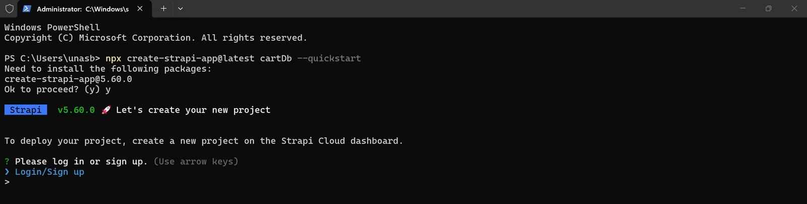
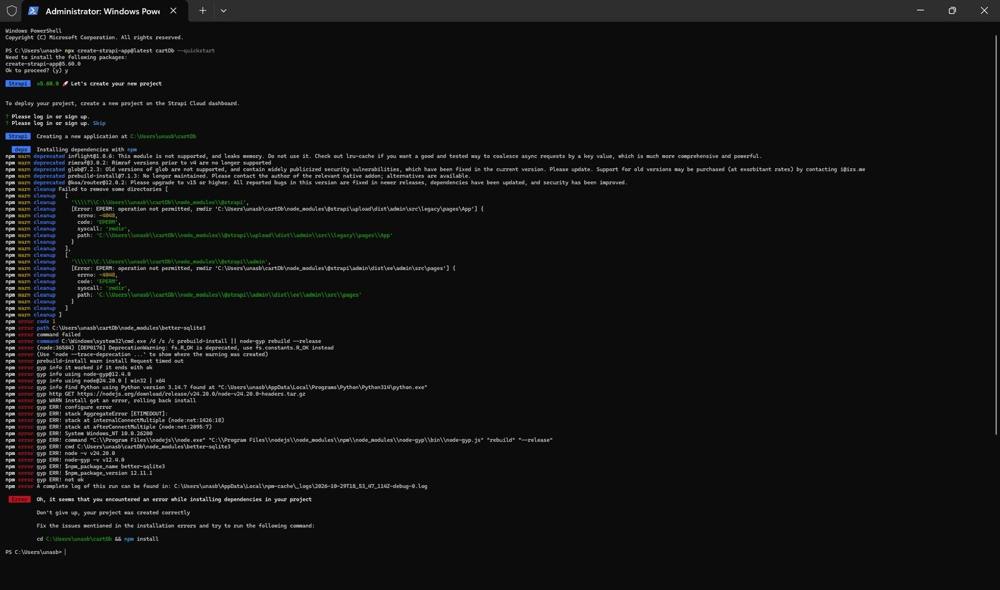
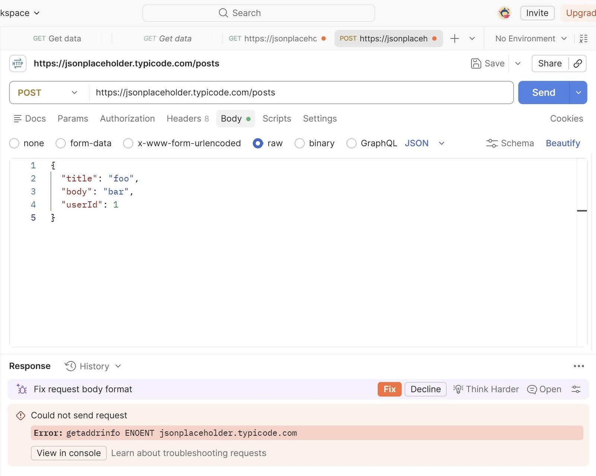

Thesis
When the backend is generated, the judgement moves
Not away from engineering — toward modeling, access control and verifying what the API actually returns.
This project builds the data layer and storefront of a small online shop. A headless CMS stores the product catalog, provides an admin panel for non-technical editors, and auto-generates a REST API from the content model, leaving the presentation layer to any frontend. A React cart consumes that API.
Nobody hand-writes server code here, which is the point and also the trap. The work that remains is the work that decides whether the result is correct: how the data is typed, who is permitted to change it, and whether the client matches the response the API genuinely produces rather than the one the documentation describes.
The four milestones
- Backend — model a product collection, configure least-privilege role permissions, publish the catalog, expose it over REST
- API testing — learn the workflow against a public practice API: status codes, latency, payload size and response shape
- Authenticated writes — apply that workflow to my own backend, creating a product through a token-protected endpoint
- Storefront — connect the React cart so its catalog restocks from the live API

Model
Typing the catalog, and locking it down
Four fields, two of them deliberately numeric, and a default of exposing nothing.
| Field | Type | Purpose |
|---|---|---|
| Name | Text | Product name |
| Country | Text | Country of origin |
| Cost | Number · integer | Unit price, so the frontend can do arithmetic without parsing strings |
| inStock | Number · integer | Available units, for the same reason |
Typing cost and stock as integers rather than text avoids a whole category of bug in which "$3" and "3" are the same value to a person and different values to a program. It is the cheapest decision in the project and the one with the longest reach.
Least privilege, by default
The CMS exposes nothing publicly unless told to. For the public role I enabled exactly two operations — find and findOne — so anyone can browse the catalog and no unauthenticated caller can create, edit or delete a product. Every write therefore needs a credential, which is what makes the authenticated request in section 04 meaningful rather than decorative.


Data
Two things the raw JSON said that the admin UI did not
Reading the actual response rather than the interface surfaced both immediately.

Data quality
The raw JSON revealed trailing spaces inside product and country values. They are invisible in the admin interface, and perfectly capable of breaking an exact-match search or filter later — the kind of defect that gets reported as "search doesn't work for some products" long after anyone remembers typing them. I corrected them and republished.
Identifiers
The admin list showed one set of numeric IDs while the API returned another. Strapi 5 stores a draft row and a published row per entry, and the API serves the published rows, so the numeric ID is not a stable handle across both. The document ID is.
Auth
Reads are public, writes carry a token
The same testing workflow, applied first to a practice API and then to my own.
Before testing my own backend I spent a round against a public practice API, sending one read and one write and analyzing the status code, response time, size and body of each. The distinction worth internalizing: a 200 means "here is what you asked for," while a 201 means the server accepted a payload and created a resource. The practice API confirmed creation twice over — the status, and a server-generated identifier in the body — which is exactly the pattern to look for when verifying any write.
| Request | Auth | Status | Time | Result |
|---|---|---|---|---|
| GET /posts | None | 200 OK | 134 ms | 100 posts across 10 users, each with the expected fields |
| POST /posts | None | 201 Created | 129 ms | Echoed the payload and assigned a new identifier |
| GET /api/products | Public role | 200 OK | 59 ms | Full catalog returned in the response envelope |
| POST /api/products | Bearer token | 201 Created | 66 ms | New product created and published immediately |


Cross-checked three ways
The write was confirmed from three independent places: the response in the API client, the server's own request log recording the same call at the same moment, and the record itself in the database. Postman, the log and the data all describing one write is a stronger claim than any one of them alone — and it is the habit that catches a request that appeared to succeed but never reached the server.
Client
Mapping the response that exists
The starter code described an older response shape. Following it literally would have produced a list of undefined values.
The storefront's root component owns the state — products, cart and total — and passes data and callbacks to four children: the catalog list, the cart, the checkout total, and the restock form, which receives the setter so it can replace the shared catalog.
The restock handler prevents the browser's default form submission, awaits a request to whatever URL was typed into the form, maps each product into the four fields the UI uses, and hands the result to the setter so React re-renders. The whole request is wrapped in try/catch, so a bad URL or a stopped server logs an error instead of crashing the app.
The breaking change
The starter comments said to read each product from an attributes wrapper — the older response shape. Inspecting the real response showed that the current major version returns fields at the top level instead. Mapping through the wrapper would have produced a catalog of undefined values: a UI full of blanks, with no error anywhere to explain it.


Debugging
Three times the guidance was wrong
A missing prompt, a confidently incorrect suggestion, and a breaking change — each requiring the same move.
| Issue | Root cause | Resolution |
|---|---|---|
| CLI prompt not in the instructions | Tutorial written for an older version of the tool | Identified the skip option and kept the project local |
| Native dependency install failed | Network timeouts fetching the prebuilt binary, then the headers needed to compile from source | Diagnosed from the install log; re-ran the install inside the project, which completed |
| Invisible data errors | Trailing spaces typed into product fields | Caught by inspecting raw JSON; cleaned and republished |
| API client request failed outright | DNS lookup failure — not the request body, despite the assistant's suggestion | Read the error, declined the suggested fix, retried the unchanged request |
| Restock mapping per the instructions | The major version removed the attributes wrapper | Verified the real shape and mapped top-level fields |
The misleading suggestion, in detail
My first write to the practice API failed with a getaddrinfo ENOENT error, and the tool's AI assistant offered to "fix request body format." Reading the error itself told a different story: getaddrinfo is the DNS lookup, so the request never left my machine and the JSON body could not possibly be the problem.
I declined the fix, treated it as a transient network issue — consistent with the timeouts already seen during installation — and re-sent the unchanged request, which succeeded. Had I accepted the suggestion, I would have changed working code and still had a DNS problem.
Reading past the noise
The failed install produced a long log full of deprecation and cleanup warnings, all harmless. The useful lines were two timeouts. A timeout means retry; a configuration error means reconfigure. Reading far enough to tell them apart saved a rebuild.


Status
What works, and what is honestly incomplete
A list of what a thing cannot do yet is more useful than a claim that it is finished.
| Capability | State | Note |
|---|---|---|
| Content model and published catalog | Delivered | Typed fields, draft and published workflow, stable document identifiers |
| Least-privilege public access | Delivered | Read-only public role; writes require a scoped token |
| Verified API contract | Delivered | Four requests across two APIs, cross-checked against the server log and the database |
| Live storefront restock | Delivered | Adapted to the current response shape rather than the documented one |
| Product images | Incomplete | Thumbnails show placeholders because the image files are absent, and photos are chosen by list position, so they would mismatch after a restock. Needs a media field per product |
| Cart identity | Incomplete | The cart counts quantities by name, so two products sharing a name would share a stock count. Key by document identifier |
| Real commerce | Next | A CMS handles the catalog and has no cart, orders or payments. Needs accounts, an orders collection, stock decrement on purchase and a payment provider |
| Configuration and dependencies | Next | API URLs are hard-coded; dependency audits report vulnerabilities in starter packages; tokens belong in environment configuration |
| Test coverage | Next | A test runner is configured but the new features are not covered. Unit tests for the restock mapping and API route tests, run in CI |